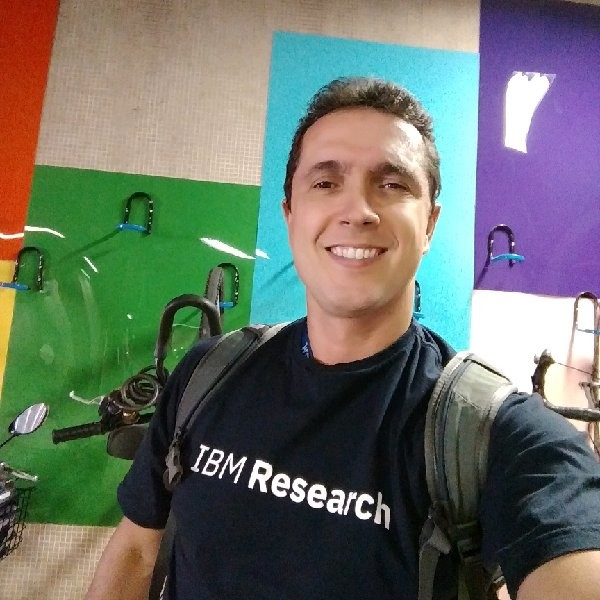
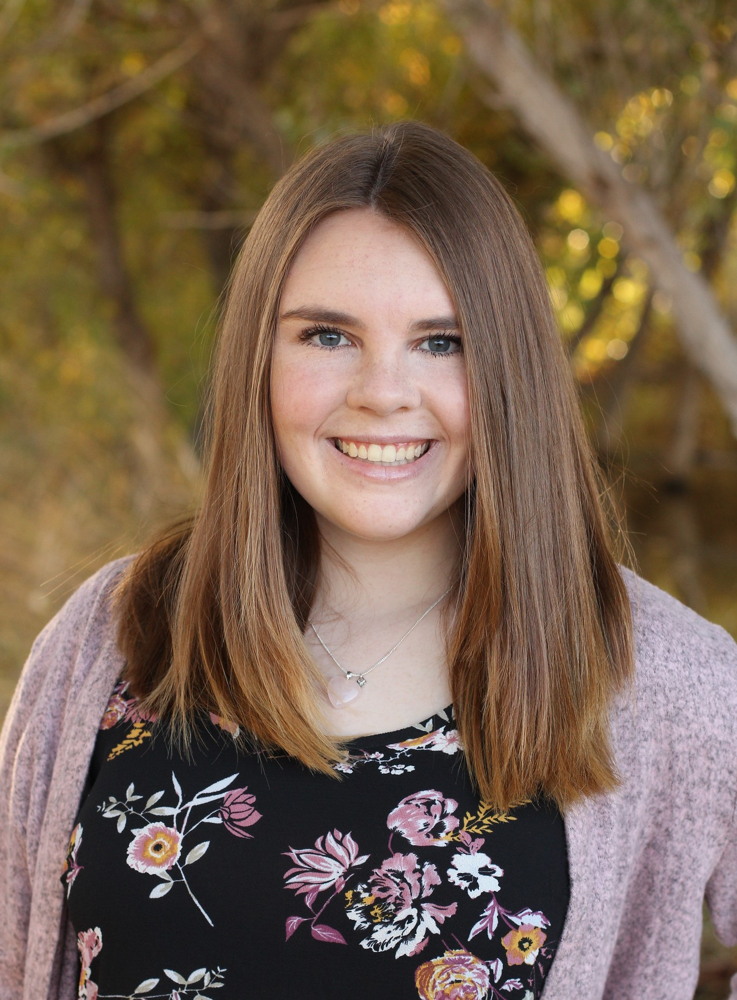
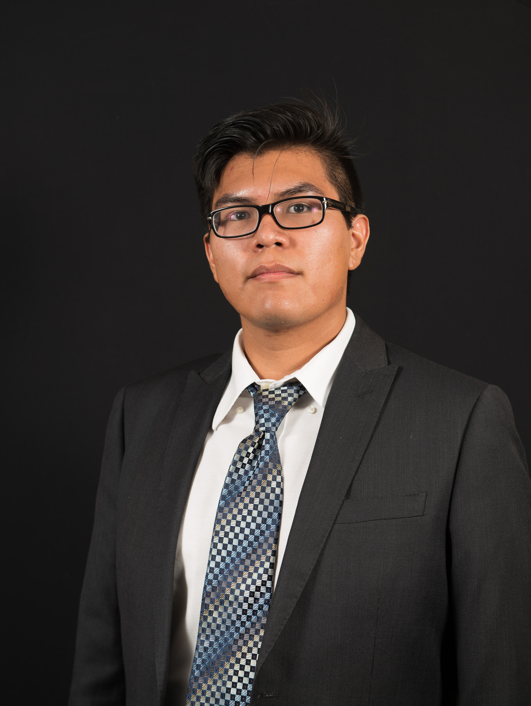
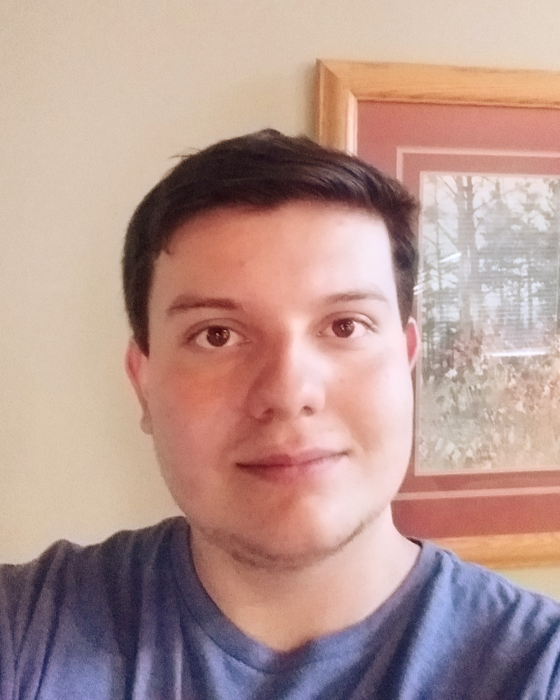

Dr. Chris Doughty
|
---
|
Fabio Santos

|
Fabio is currently a Researcher, Teaching Assisstant, and Developer
at Northern Arizona University. In the past he has performed research
for IBM and lectured at Laureate International Universities in Rio de Janeiro.
The team maintains a weekly meeting time with Fabio to discuss details of
the project and how the team is performing.
|
Samuel Prasse
|
Samuel is the Team Leader of the project and primary contact for the team mentor,
sponsor, and capstone organizer. He ensures that team members are on track with
assignment completion and deliverables. He also communicates with the customer
Dr. Chris Doughty about any updates or meetings for the team. He will let the
client know of any major issues in the project.
|
Kaitlyn Grubb

|
Kaitlyn
|
Joshus Tenakhongva

|
|
Tyler Pehringer

|
Tyler is the team editor and recorder, as well as another coder for the project.
He makes sure that all meetings have detailed notes, records any issues for that the
team faces and how they were resolved. As editor, he makes sure there are no errors
in the code and in any documents created by the group.
|